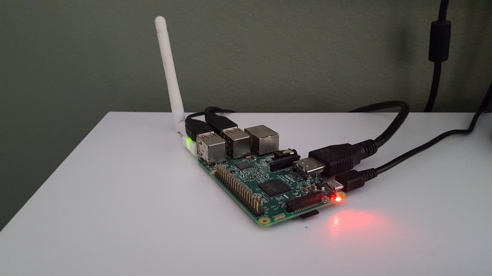

Setup¶
Aim¶
Setup the project.
Summary¶
Set up a Raspberry Pi which will be a central component of this project. The main requirement here is to update, upgrade and install python 3. I have included my setup for github.
{kind=link}
Note
I am not using the wifi dongle shown in this image. I used a lan cable for development and the builtin wifi capability once the project was completed.
Gear¶
- Raspberry Pi v3
- 16GB microsd card
- Keyboard and mouse
- Monitor and HDMI cable
- 5v power supply
- Lan cable
Warning
I ran out of space using an 8GB card. I tried cloning the RPi image to the 16GB card but this failed because the OS was NOOBS and the built in card expansion method (via raspi-config) didnt work. I tried several methods to expand the root partition using gparted and by modifying cylinder boundary markers using parted. I found that it was easier to start from scratch. On the upside this meant I had an updated desktop for the RPi.
Raspberry Pi OS¶
- Download and extract Raspbian https://www.raspberrypi.org/downloads/raspbian/
- Download and install Win32 Disk Imager 1.0 (I used Windows for this, you could also use dd on Linux)
- Format 16GB microsd card to fat32
- Write image to microsd card
- Insert microsd card and boot
Preferences¶
- Set keyboard preferences (for me English (US))
Raspberry Pi password¶
passwd
# Enter default password => raspberry
password
password
Raspberry Pi name¶
# step 1
sudo nano /etc/hostname
#delete raspberrypi
gardenmonitor
# exit => ctrl-x > y > enter
# step 2
sudo nano /etc/hosts
127.0.0.1 raspberrypi # find this line and change it to...
127.0.0.1 gardenmonitor
192.168.1.50 gardenmonitor # static IP to be set up below
# exit => ctrl-x > y > enter
# check host name and IP
hostname
hostname -I
Set timezone¶
sudo dpkg-reconfigure tzdata
Expand file system and enable ssh¶
df -h # check space on root
sudo raspi-config
# SELECT => 7 Advance Options > A1 Expand Filesystem > Select
# SELECT => 5 Interfacing Options > P2 SSH > Enable
sudo reboot now
Update and upgrade¶
sudo apt-get update
sudo apt-get upgrade
Create static IP address¶
sudo nano /etc/dhcpcd.conf
# add to bottom of file...
interface eth0
static ip_address=192.168.1.50/24 # I made this up
static routers=192.168.1.1 # My router address
static domain_name_servers=192.168.1.1
# exit => ctrl-x > y > enter
sudo reboot now
Install¶
sudo apt-get install python3
sudo apt-get install git
sudo apt-get install iceweasel #Dev using Firefox
Folder¶
# repos/
mkdir GardenMonitor
cd GardenMonitor
Git¶
# repos/GardenMonitor
git init
# setup github repo, then...
git remote add origin https://github.com/rayblick/GardenMonitor.git
Testing¶
- Install an app on your mobile phone to ping the IP address (I used one called “Ping”)
- Ensure your phone is connected to the same network as the RPi
- Test that the static IP address is found by pinging “192.168.1.50”